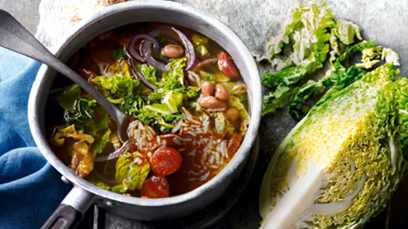

<!--
 Name:Neville Zou
 Student Id:
-->
<div class="pages">
<div data-page="projects" class="page no-toolbar no-navbar">
   <div class="page-content">
        <!--top header-->
      <div class="navbarpages">
         <div class="nav_left_logo"><a href="index.html"></a></div>
         <div class="nav_right_button">
		 <!--A link to Open Main Nav-->
            <a href="menu.html"></a>
			<!--A link to go back to Previous Page-->
            <a href="food-menu.html"></a>
         </div>
      </div>
	   <!--top header-->
      <div id="pages_maincontent">
	  <h2 class="page_title">Our Recepie</h2><!-- the header information of the page -->
         <div class="post_single">
		   <!--Recipe Image And title-->
            <div class="featured_image">
			
               <!-- image tag for diplay image in browser-->
               <div class="post_title_single">
                  <h2>Savoy, chorizo & borlotti bean broth</h2>
               </div>
               <div class="post_social">
                  <a href="#" data-popup=".popup-social" class="open-popup"></a>              
               </div>
            </div>
			  <!--Recipe Image And title-->
			   <!--Recipe Detail-->
            <div class="page_content">
               <div class="entry">
                  <ul class="simple_list"><!-- unorderlist tag-->
                     <li> Meanwhile, heat a dry, saucepan over a medium heat. Add the chorizo and cook for 3-4 minutes, until crisp. Remove and set aside. Pour out the chorizo oil, then add the onion, garlic, olive oil and season. Cook for 8 minutes, until softened. Pour in the stock and bring to the boil, then simmer for 5 minutes.</li><!--LIst items-->
                     <li> Add the chorizo, beans and cabbage, and cook for a further 3-4 minutes.
                        Drain the cooked rice and add to the saucepan with the other ingredients. Serve with some crusty bread, if you like.
                     </li>
                  </ul>
               </div>
            </div>
			 <!--Recipe Detail-->
         </div>
      </div>
   </div>
</div>